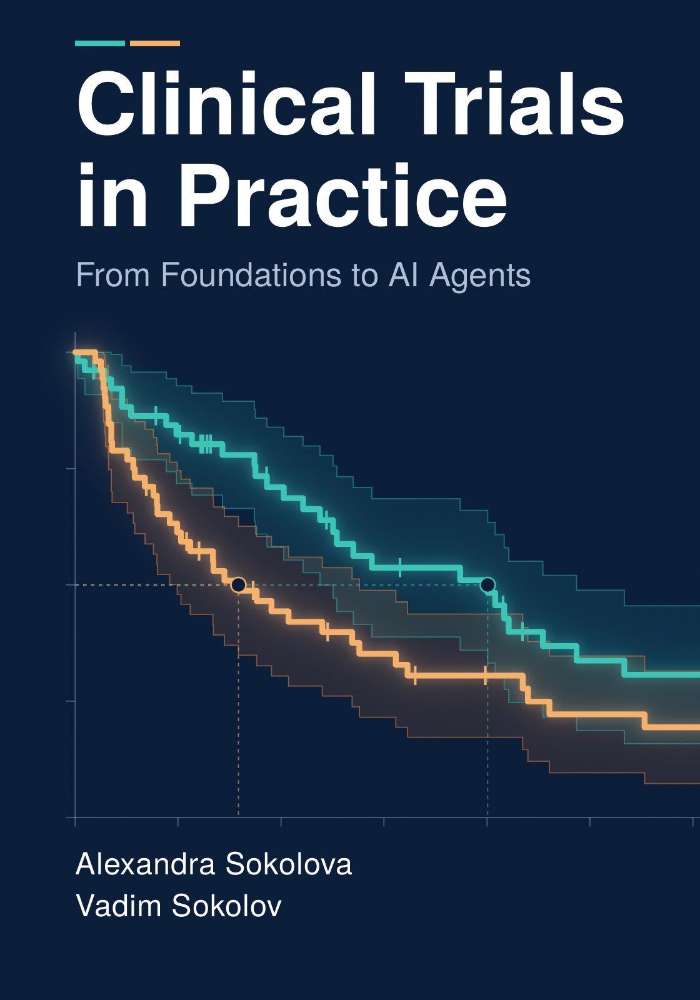

Clinical Trials in Practice From Foundations to AI Agents
By Alexandra Sokolova and Vadim Sokolov.
PDF, online edition, source on GitHub

Description
Clinical trials are how medicine finds out what works, and they are slow, expensive, and tightly regulated. A well run trial can show that a treatment extends life or eases suffering. A poorly designed one can hide a real benefit, miss a serious harm, or spend years and produce nothing usable.
This book treats clinical trials as science and as regulated operations, and it gives Phase III the most room, because that is where approval is won or lost. It starts with how clinical research took its present shape, the drug development lifecycle, the regulatory frame, and the ethics of research with human subjects. It then follows a compound through the economics of development and Phases I to IV. The core of the book is the confirmatory trial: statistical foundations, adaptive and Bayesian designs, study design, real world evidence, randomization, endpoints, site selection, recruitment, logistics, data management, monitoring, safety reporting, essential documents, and the systems underneath. The closing chapters cover trial closeout, the clinical study report, and regulatory submission.
Methodology, operations, and technology are treated together. Where the book turns to automation and AI agents, one test applies: the tool must stand up in an inspection, with validation, governance, and a named person accountable for each decision.
It is written for medical directors, study managers, investigators and site staff, and for students and managers deciding whether AI has a place in regulated research.
How to cite
Sokolova and Sokolov (2026), Clinical Trials in Practice: From Foundations to AI Agents, edition 1, https://doi.org/10.5281/zenodo.23330460.
@book{sokolovasokolov2026clinical_trials_in_practice,
author = {Sokolova, Alexandra and Sokolov, Vadim},
title = {{Clinical Trials in Practice: From Foundations to AI Agents}},
year = {2026},
publisher = {Independently published},
doi = {10.5281/zenodo.23330460},
url = {https://vsokolov.org/books/clinical_trials_in_practice/}
}License: Text, figures and PDF: CC BY 4.0. Code: MIT.
This page is generated from the book’s repository at v1.0.0.